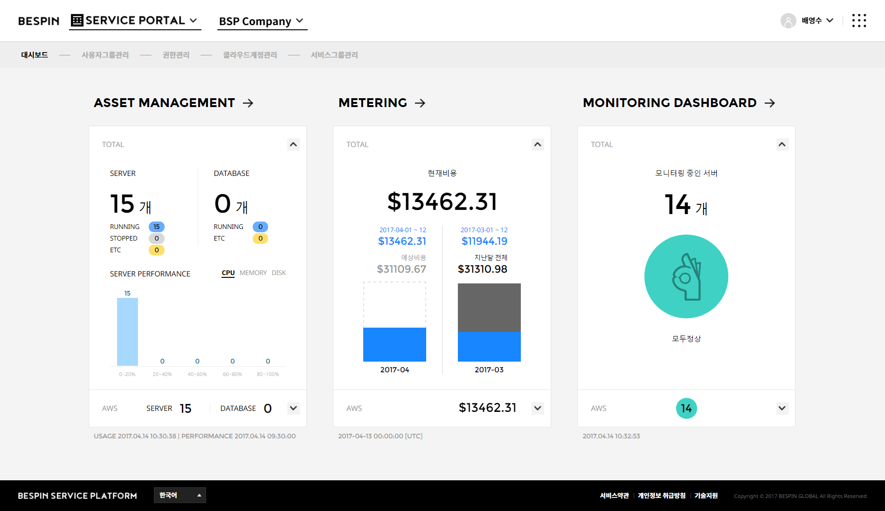
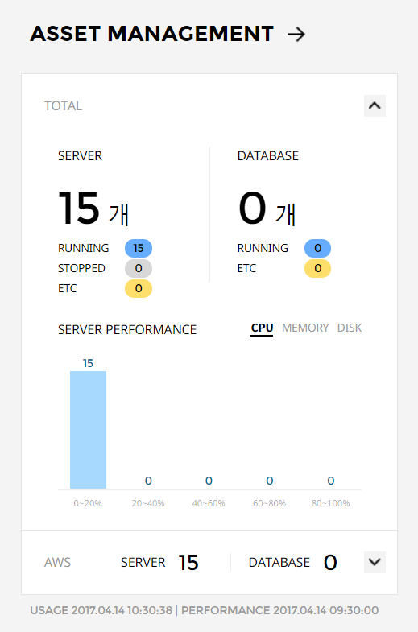
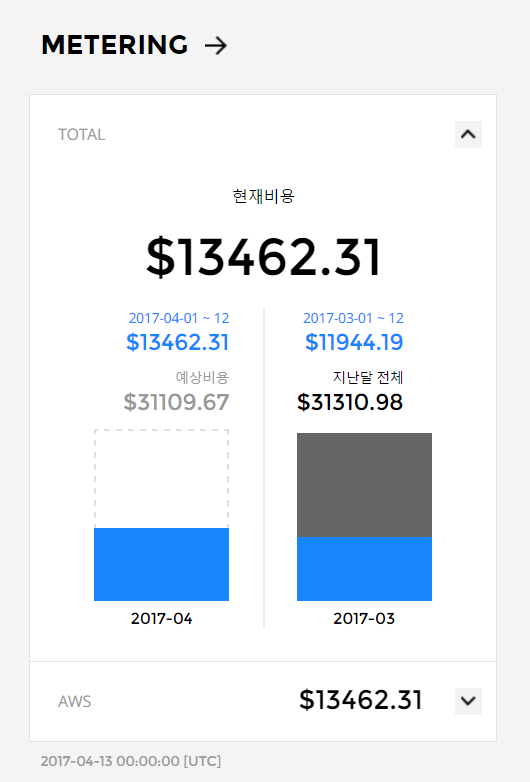
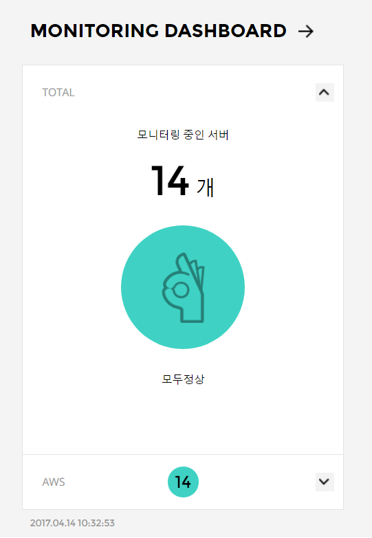
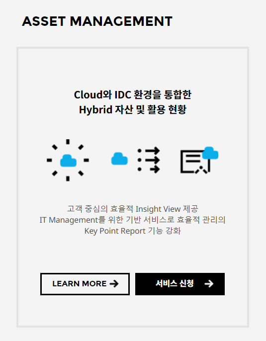

Service Portal
사용 중인 서비스들의 요약 정보와 구성원들의 권한, Cloud Account, 서비스 그룹을 관리할 수 있습니다.
대시보드
Service Portal - Dashboard현재 이용 중인 서비스들의 요약 정보를 카드로 제공하며, 각 서비스로 빠르게 이동할 수 있는 바로가기 기능을 제공합니다.
또한 사용하지 않는 서비스의 설명을 제공하며, 바로 서비스를 신청할 수 있습니다.

1. Asset Management
현재 사용 중인 Infra 자원들의 Usage, Performance의 요약 정보를 확인할 수 있습니다.

-
Asset Management 바로가기
Asset Management 서비스로 바로 이동할 수 있는 링크를 제공합니다. 이름을 클릭하시면 Asset Management 서비스의 대시보드 화면으로 이동합니다. -
Total
운영 중인 모든 Multi Cloud, Hybrid 환경의 서버, DB 사용 수량과 퍼포먼스에 따른 수량 분포를 확인할 수 있습니다. -
Vendor 별 정보
벤더별 서버, DB 사용 수량과 퍼포먼스에 따른 수량 분포를 확인할 수 있습니다.
카드를 펼치면 해당 벤더의 서버, DB의 수량 및 퍼포먼스에 따른 수량 분포를 확인할 수 있습니다.
2. Metering
자원 사용으로 인한 발생 비용을 확인할 수 있습니다.

-
Metering 바로가기
Metering 서비스로 바로 이동할 수 있는 링크를 제공합니다. 이름을 클릭하시면 Metering 서비스의 대시보드 화면으로 이동합니다. -
Total
운영 중인 모든 Multi Cloud에서 발생한 비용이 표시됩니다.
이번달에 발생한 비용과 이번달의 전체 예상 비용이 표시되며, 이번달 예상 비용과 발생 비용을 막대 그래프로 확인할 수 있습니다.
현재 일 기준으로 전월 동일 기간에 대한 발생 비용과 전원 전체의 비용을 표시하며, 전월 전체 비용과 전월 동일 기간에 대한 발생 비용을 막대 그래프로 확인할 수 있습니다. -
Vendor 별 정보
벤더별 발생 비용을 확인할 수 있습니다.
카드를 펼쳐 해당 벤더에서 발생한 전체 비용과 이번달 비용/예상 비용, 전월 비용/전월 동일 기간 비용을 확인할 수 있습니다.
3. Monitoring Dahsboard
운영 중인 서버들의 상태와 발생한 알람의 수를 확인할 수 있습니다.

-
Monitoring Dashboard 바로가기
Monitoring Dashboard 서비스로 바로 이동할 수 있는 링크를 제공합니다. 이름을 클릭하시면 Monitoring Dashboard 서비스의 대시보드 화면으로 이동합니다. -
Total
운영 중인 모든 자원의 상태별 수량을 표시합니다.
발생한 알람의 수를 확인할 수 있습니다.
-
Vendor 별 정보
벤더별 자원들의 상태별 수량과 발생 알람 수를 표시합니다.
카드를 펼쳐 해당 벤더에서 사용하고 있는 자원들의 상태별 수량과 발생한 알람 수를 확인할 수 있습니다.
4. 서비스 소개, 신청
사용하지 않는 서비스에 대한 소개와 서비스를 신청하기 위한 바로가기를 제공합니다.
서비스에 대한 내용을 확인할 수 있으며, 바로 서비스를 신청해 사용할 수 있습니다.

-
LEARN MORE
서비스 상세 안내 페이지로 이동할 수 있는 바로가기를 제공합니다. -
서비스 신청
서비스 신청할 수 있는 페이지로 이동할 수 있는 바로가기를 제공합니다.